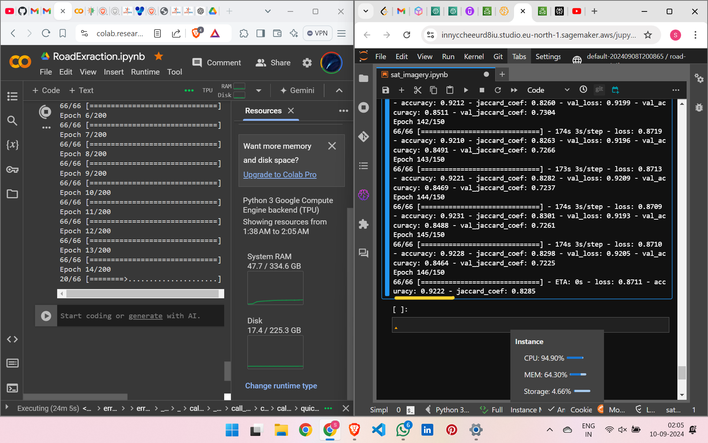
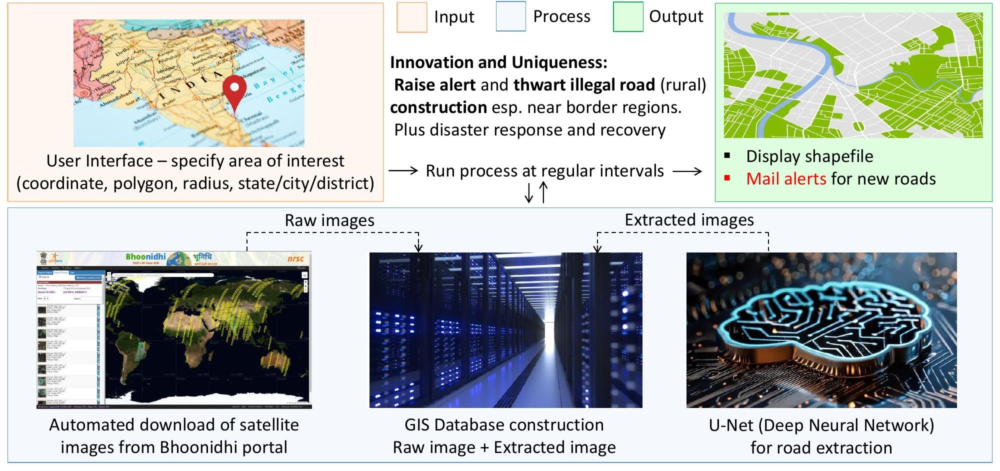

I came
I saw
I conquered
Our model in its current stage has attained 92% accuracy!
and we are aiming for a 3σ (97%) accuracy!!

Our main aim is to make our model be capable to extract rural roads esp. in remote areas/border regions. We believe that this shall
very much enhance our surveillance and national security

We've connected with ISRO scientists who developed the Bhoonidhi portal and other industry experts.
It's clear, we are going for a clean win!
Thank you for the opportunity!